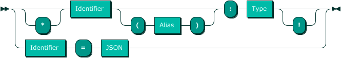
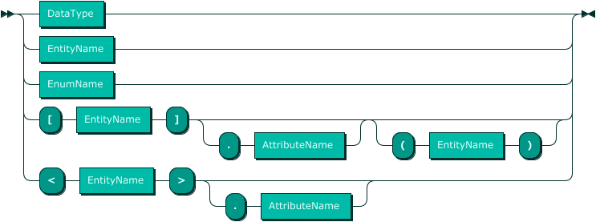
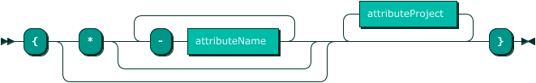
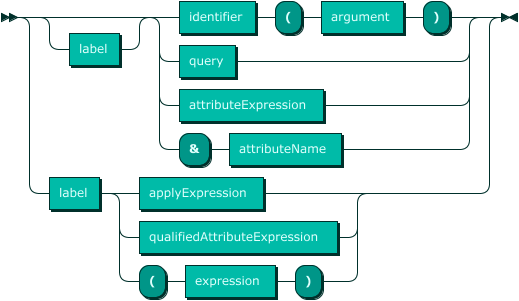
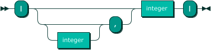
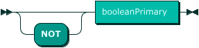
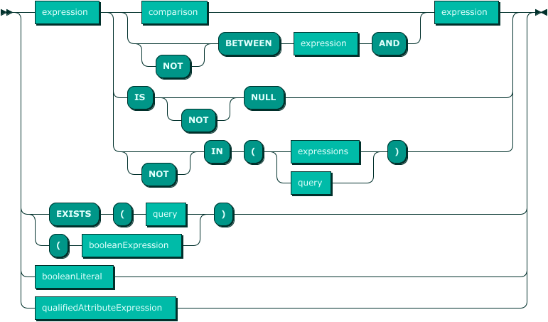
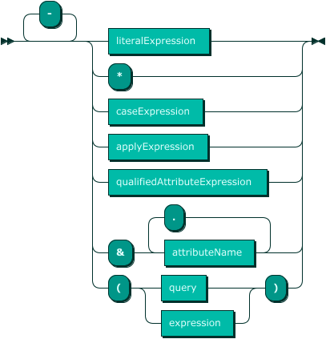
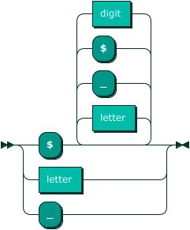

Syntax
The following syntax (or railroad) diagrams of both the data modeling and query language provide a clear description of those languages. The syntax for JSON (JSON syntax) has been omitted.
Data Modeling Language
An “Entity-Relationship” style language is used to describe the database. Only the portions of the database for which OQL is being used need to be described.
Data Modeling Grammar Rules
- Model
- The complete data model is a series of entities.

- Entity
- Entities correspond to tables in the database. An entity comprises an identifier matching the name of the corresponding table, which can be given an alias, and a series of attributes.

- Identifier
- An identifier can have letters, digits, underscores, and dollar signs, but may not begin with a digit.

- Alias
- Aliases are identifiers.
- Attribute
- Attributes correspond to columns in a table, if they have a data type, or a simple entity type (i.e., just the name of an entity). An attribute that begins with an asterisk is the primary key. The name of an attribute can be aliased. An attribute that ends with an exclamation mark can’t be null or excluded when inserting.
- 
- Type
- There are several kinds of attribute types:
DataTypecorresponding to a database engine data type. These attributes correspond to table columns that are not foreign keys.EntityNamerepresenting the many-to-one relationship (from the point of view of the current entity). This is the entity relationship type that corresponds to a table column that is a foreign key.[ EntityName ]or[ EntityName ] . AttributeNamerepresenting the one-to-many relationship (from the point of view of the current entity). This is the array type that represents all the entities (rows) that are referencing the current entity.[ EntityName ] ( EntityName )or[ EntityName ] . AttributeName ( EntityName )representing the many-to-many relationship. The secondEntityNamein parentheses refers to the junction or link entity (table).< EntityName >or< EntityName > . AttributeNamerepresenting the one-to-many relationship (the current entity is the one being referenced by a foreign key).
- 
- DataType
- Any one of the basic data types that are commonly support by database systems. Any group of datatypes that begin with the same spelling (beyond the first one or two letters) are synonymous (e.g.,
boolandbooleanrefer to the same datatype). -

- EntityName
- An EntityName is an identifier that corresponds either to the identifier given as the entity name if it wasn’t aliased, or to the alias if it was.
- AttributeName
- An AttributeName is an identifier that corresponds either to the identifier given as the attribute name if it wasn’t aliased, or to the alias if it was.
Query Language
The query language is inspired by GraphQL. In the following grammar, all keywords (double-quoted string literals) are case-insensitive.
Query Grammar Rules
- query
- A data retrieval query expression begins with the name of the entity being queried followed by zero or more optional relational operations:

- project
- This relational operation specifies the structure of the result. If omitted, the result will comprise all datatype attributes (i.e., columns that are not foreign keys) only, in the order in which they were defined in the data model. The fact that relational attributes must be explicitly specified prevents circularity as well as the retrieval of, possibly very large amounts of unneeded data. The structure of the result is basically a sequence of expressions each with an (often implicit) label.
- 
- attributeProject
- The syntax of an attribute within a project is essentially a possibly optional label, followed by an expression, or an inner query if it is a reference to an array type attribute.
- 
- label
- Results are in the form of objects which can are thought of as a list of property/value pairs. Therefore, in order to build a result, the property names have to be known. A label, when it is given becomes the property name of the associated value. If omitted, there are simple obvious rules for inferring it.

- entityName
- An entityName is an identifier that names an entity (table) or it’s alias.
- attributeName
- An attributeName is an identifier that names a column (attribute) or it’s alias.
- applyExpression
- Function application has conventional syntax (e.g.,
SUM(cost)). Currently, function names pass through transpilation unchecked. 
- attributeExpression
- An attributeExpression is an identifier that names an attribute, whether it’s a column or not, or it’s alias.
- qualifiedAttributeExpression
- This is a reference to an attribute that essentially traverses or dereferences a foreign key.

- select
- The select relational operation contains a boolean row selection or filter expression. If omitted, all rows will be retrieved.The row selection condition must be a boolean valued expression.
- group
- The group operation contains a series of one or more grouping expressions by which an array result will be grouped.

- order
- The order operation contains a series of one or more ordering expressions by which an array result will be ordered. Database engines differ in how they order results that contain null values. OQL guarantees a consistent default behaviour across supported engines. For ascending ordering, nulls are first. For descending ordering, nulls are last.

- restrict
- This is really two operations that tend to go together: offsetting or skipping an initial number of results, and limiting the number of results. The first integer is the offset (zero if omitted), and the second is the limit (unlimited if omitted).
- 
- booleanExpression
- A booleanExpression is a boolean (true or false) valued expression that may be a disjunction (logical “or”) of two or more boolean valued expressions.

- andExpression
- An andExpression is a boolean valued expression that may be a conjunction (logical “and”) of two or more boolean valued expressions.

- notExpression
- A notExpression allows a boolean valued expression to be negated.
- 
- booleanPrimary
- These are the most basic kinds of boolean valued expressions.
- 
- expression

- multiplicative

- primary
- 
- identifier
- 
- string
- There are two types of string literals: single quoted and double quoted. Single quoted strings are delimited by single quotes, and so cannot contain a single quote unless it is escaped. Double quoted strings are delimited by double quotes, and so cannot contain a double quote unless it is escaped. Strings can have the following characters and escape sequences:
- any unicode character except for: characters in the range \x00-\x1F, character \x7F
- backslashes are not allowed unless followed by one of the characters:
\'"bfnrtu - if a backslash is followed by a
u, then 4 hexadecimal digits must follow after that
1.0.0-RC.3.24